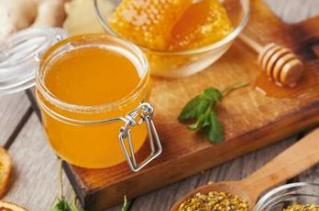

Le Miel
Il est produit à partir du nectar des fleurs ou du miellat, substance visqueuse et sucrée apportée par d'autres espèces animales, comme les pucerons.
L'abeille les butine puis les transforme en les combinant avec des matières propres.
Sa composition est de 80% de sucres, 15 à 20% d'eau, 3% de protéines, et des vitamines, des minéraux, des oligo-éléments.
La réglementation interdit d'ajouter ou de retirer un des composants du miel.
La Propolis
L'abeille récolte cette substance brune et odorante sur les bourgeons et l'écorce des arbres pour isoler la ruche.
Sa composition est un complexe mélange de résines, baumes, cire, acides gras, huiles essentielles, pollen, substances organiques et minérales.
Réputée pour stimuler les défenses immunitaires, elle était déjà préconisée par Hippocrate, père de la médecine, en 400 avant JC.
Le Pollen
C'est la semmence mâle des fleurs et une nourriture essentielle pour l'abeille, qui en fait des pelotes.
Par sa nature, le pollen a une très forte teneur en protéines et acides aminés.
Il contient la plupart des sels minéraux en quantité, des vitamines, des antioxydants.
A ce titre, on lui prête mille vertus. Il est utilisé lors de grosses fatigues par exemple.
La Gelée Royale
C'est la nourriture exclusive de la reine, qui vit de 5 à 6 ans, contre 45 jours pour les abeilles, qui n'en consomme qu'à l'état de larve.
Jaune pâle, secrétée seulement quelques jours par les abeilles nourricières, elle est riche en protéines, vitamines B, acides aminés dont un rare,
parfois surnommé Facteur de rajeunissement. Cet acide aminé confère à la gelée royale des propriétés régénératrice, antibactérienne, antifongique...
Le Miel Bio
Pour un miel certifié bio, il faut :
Des ruches entourées de cultures bio ou sauvages sur un rayon de 3 km, et éloignées d'au moins autant de toute pollution (autoroutes, décharges...).
Des ruches en bois non traité chimiquement avec des cadres en bois et des opercules en cire bio.
Des abeilles nourries essentiellement de leur miel et soignées par des méthodes naturelles (phytothérapie,...).
Une récolte sans répulsifs chimiques et une extraction à froid pour conserver au maximum les propriétés du miel.
Aucun mélange d'origines différentes, pour garantir la traçabilité.
Plus d'info...avec
Les Bienfaits
La tradition et la science reconnaissent de nombreuses qualités au miel, liées en partie aux espèces butinèes.
Ainsi, ceux d'eucalyptus, de pin et sapin peuvent avoir un rôle bénéfique sur les bronches.
Le miel est aussi antibactérien et cicatrisant, des propriétés dues notamment à ses caractéristiques physico-chimiques, son acidité (pH 3 à 5),...
Il est riche en flavonoïdes, efficaces contre le vieillissement des cellules, et a un effet prébiotique, favorable à la flore intestinale.
Précautions
Concentré en sucre simples ou composés (fructose et glucose), le miel est source d'énergie.
Mais comme tout sucre, mieux vaut ne pas en abuser. En cas de pathologie (diabète mal équilibré, allergies...), la consommation
régulière des produits de la ruche est déconseillée sans avis médical.
mentions légales | conditions d'utilisation | politique des cookies